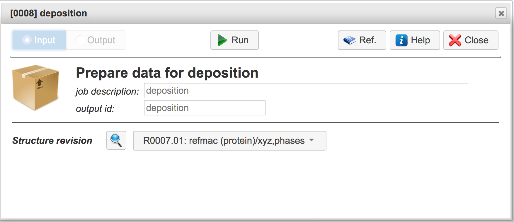
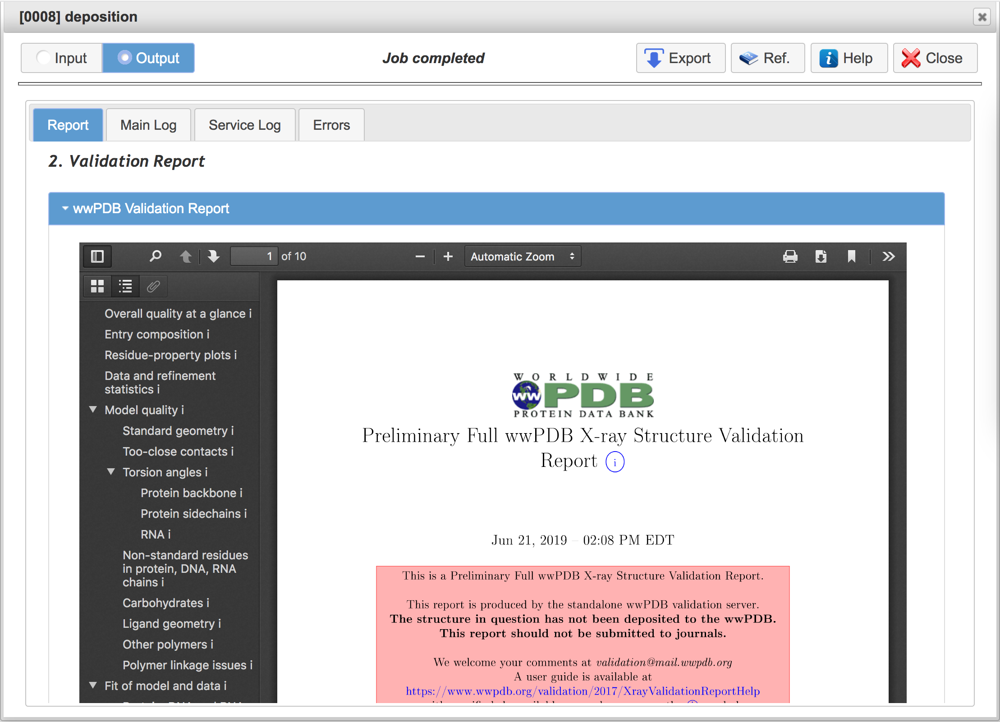
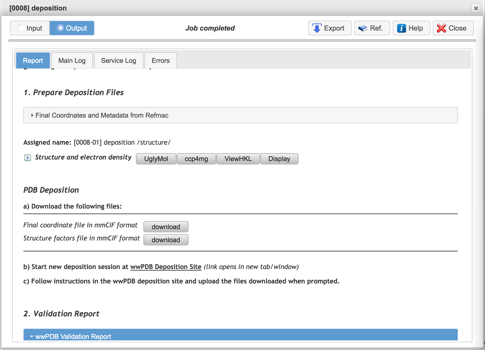

Preparation of mmCIF deposition in CCP4 Cloud
1. Add Deposition Task as a follower of task with final
model. Deposition task is found in the "Validation,
Analysis and Deposition" Section of the Task List. After
addition and running the task, your Project Tree may look similar to
one in the following pictire:

2. Start Deposition Task by pressing "Run" button in the Deposition
task dialog:

3. After Deposition Task finishes, inspect the PDB Validation
Report, delivered by task:

4. If you find that the structure is worthy of deposition, then:
- download the mmCIF files with final model and structure
factors using two Download buttons in the task output
page (cf. picture below)
- follow the link to wwPDB deposition site given in the task
output page
- start PDB deposition session, sand
- upload the mmCIF files downloaded when requested
